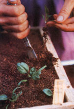
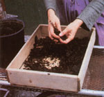
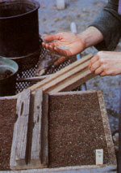
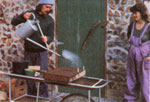
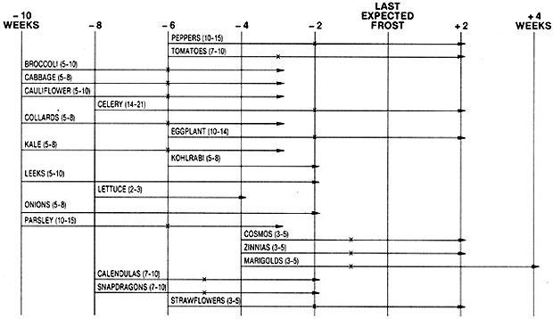

The seed is awakened in the darkness of the Earth, The leaves are quickened in the power of the Air, And all fruit is ripened in the might of the Sun. So awakens the Soul in the shrine of the Heart. So quickens the Spirit in the Light of the World. So ripens man's power in the glory of God.
Rudolf Steiner, Verses and Meditations
Between the gleaming fantasies in seed catalogs and the mishmashed cornucopia that is a full-blown summer garden stand the tiny kernels known as seeds. Seed starting is the first-and therefore most important-task of the gardener's year. Unless you go to the expense of buying all your garden plants (which will severely restrict your varietal choices) or simply wait for the weather to warm up enough to sow everything directly in the ground (which will severely curtail the length of your growing season), you'll want to start many of your future foods and flowers indoors . . . in containers . . . under close personal supervision.
The little home births you'll be attending demand a lot of knowledgeable care. To help you in this seminal adventure, we'll share here the way that Walker and Olivia Abel, MOTHER's Eco-Village gardeners, tend their own spring starts. Every year, the couple successfully raises approximately 50 flats-with up to 200 seeds per tray-of plants from seed. In other words, they know what they're doing. So, while there are plenty of other good seed-starting systems (you may have another approach that works fine for you), we think you'll find the following account of the Abels' techniques helpful . . . and potentially quite money-saving, too.
Walker and Olivia are both biodynamic/French intensive gardeners: They trained in the Santa Cruz garden program begun by BFI's founder, Alan Chadwick. [EDITOR'S NOTE: For more on BFI, see "MOTHER's Minigardens Experiment" on page 56.] While they've adapted "the method" to suit their own needs and experiences, they still rely heavily on this sensitive, natural system of gardening. And one highly worthwhile part of that heritage is making their own planting materials.
So if you're going to follow in the Abels' seed-starting steps, the first thing you'll need to do is to make wooden seed trays. Sturdy and inexpensive, the Abels' boxes are made from cedar or redwood (both species resist rotting and are less likely than other woods to harbor diseases).
All you have to do is nail together sides of 3"-wide wood and then nail on some bottom slats, leaving 1/8" gaps between the lower boards so excess water can drain out. Our growers generally construct their flats to measure 12" X 24". Don't make yours much bigger-a tray full of plants and wet soil can get pretty heavy!
Next, you can make your own soil mix to go in the flats. Not only will this save you money, but it will also let you provide the optimum living soil for your plants.
The Abels recommend as ideal a flat mix that consists of the following (by volume, not weight):
5 parts leaf mold (or compost)
4 parts good topsoil
2 parts sharp sand
You can gather leaf mold (decomposed leaves) on. a visit to a forested area-but don't take it all from one place. Leave some for the plants growing there. (The Abels simply make their own leaf pile, harvesting the "ripe" mold from the bottom.) The soil should be the best topsoil you can gather. And sharp sand is the coarse builders' sand that's sold at hardware or lumber stores. (Smooth creek-side or ocean sand packs too densely when wet.)
If you use any compost, it should be from the best, most thoroughly processed batch you have. Olivia says she prefers compost made entirely from vegetable materials, adding that flowers definitely don't start as well in manure-based composts.
In practice, the Abels actually use a 5-4-3 mix instead of the usual 5-4-2, to compensate for the fact that our Eco-Village topsoil is very clayey. Feel free to adjust the formula yourself to suit your own particular experiences or growing conditions. (For example, Kerry and Barbara Sullivan, our previous gardeners, used a mix that consisted of 6 parts leaf mold, 4 topsoil, 1 sharp sand, and 1 compost.)
MOTHER's gardeners say that-contrary to the popular opinion that one should bake potting soil-you won't need to sterilize this mixture. (Baking your mix kills all the beneficial bacteria, as well as any harmful ones.) You shouldn't have to add any store-bought "supplements" to fortify the growing medium, either. Your mix will supply all the nutrients that your seeds will need.
Before you start stirring up your first batch of flat mix, you should sift the compost, leaf mold, and topsoil through quarter-inch-mesh hardware cloth. The fine particles thus produced will give the starts' roots room to grow. For this task, our gardeners recommend building a simple sifting screen by tacking a piece of 1/4"-mesh hardware cloth onto a simple frame of laid-flat 2 X 4's. (They added a hand-protecting rim of 2 X 2's to cover the cloth's sharp edges.) You can make this aid any size you want-Walker and Olivia's is designed to fit conveniently over a wheelbarrow.
Sift each coarse ingredient through your screen (this'll be easier if the materials are dry), mix the correct spadefuls of each one and the sand on a hard surface, and you'll be ready to plant!
First, line the bottom of your seed flat with partly decomposed leaves broken into small say, quarter-size-pieces. This will cover the cracks in your tray bottoms so that soil won't fall through, yet will still provide necessary drainage. (Alan Chad wick always used potash rich oak leaves for this to entice roots down for a nutrient "extra.")
Next, fill the tray with your sowing mix, dropping a corner of the flat from a short height once or twice to help the mixture settle and fill the box evenly. Run a board that's wider than the tray along the top of the soil to level and smooth it. And then tamp the mix some with a smaller board to pack it a bit.
Done? Then get your seed packet, hold it over the tray (so if you spill any precious plant starters, they'll land in your soil), and tear open-but wait! Did you make labels? Always label each flat (or flat section) before you sow. Use a Popsicle stick, or something similar, on which you've written the name of the plant-including the variety-the date sown, and your source . . . all in indelible ink. Fail to do this step beforehand, and you'll pay in confusion later.
Now you can sow your seeds. You may just want to sprinkle them from the packet, dribble them off the edge of your hand, or run them through your thumb and forefinger. However you work, be sure you distribute the seeds evenly-Walker and Olivia often start at the corners and edges to make sure they don't miss those hard-to-get spaces before they sow in the middle of the tray. And don't be afraid to plant more seeds than you think you'll need ... you can always thin the weakest seedlings later.
Then lightly sift some additional soil mix over the flat to a depth of three to five times the smallest diameter of the seeds (use a kitchen sieve or the like and stir the mix as you sift, or mostly sand will fall out). Don't overdo it. Go light, rather than heavy, on this topping for now.
How close should you set your seeds? That depends on whether you plan to transplant the young seedlings to another flat for a time before you set them out in the garden. MOM's growers favor this two-step plant starting approach because it allows them to start their seeds densely. Seeds seem to germinate and grow better in clusters that form little microclimates than when spaced farther apart. It also gives the Abels an opportunity to provide the soil nutrition that's most appropriate for each stage of growth . . . and to start more seeds (so they can cull the least healthy ones while transplanting). Repeated transplanting is even said to stimulate root growth in much the same way that pruning does!
If you're going to "prick out" (as it's called) your starts to a second flat, broadcast your seeds about one-half inch apart. If, however, you intend to keep your seedlings in the same tray until set-out time, try to sow the kernels about one to two inches apart.
Oftentimes, you'll have room to plant more than one type of seed in a single flat. When that happens, lay a stick border or two on top to divide the tray surface into sections, cover areas with cardboard (or whatever) when they're not being sown, to prevent misplaced seeding . . . and make sure you label each section! The best "flatmates" are plants that have pretty much the same germination and growth rates. Then you can transplant the whole trayful at once and cause less root disturbance.
If you just pour some water on your flat, the soil mix will splash all around while your little seeds will get washed every which way and loose. Instead, water carefully. Walker and Olivia always use a Haws watering can (available from Smith & Hawken, 25 Corte Madera, Mill Valley, CA 94941, or Walter F. Nicke, Box 667, Hudson, NY 12534) because -thanks to its finely perforated, upward-pointing rose-it sprinkles water very gently on the seeds. The gardeners start and end the watering off the flat to avoid any hard splashing (see the photo). If you're watering from a bucket or can, trickle the liquid over one hand and use your fingers to break up and place the droplets.
Water the seed flats well initially, and lightly whenever the surface of the soil begins to dry out. Use tepid-not cold-water, and if your household supply is chlorinated, let the liquid stand overnight before using it so the chemicals in it will volatilize.
So far, you've maintained a warm, moist haven-a womb, in a way-for your incubating seeds. (Some growers even construct little plastic tents over their newly planted trays.) But once they start to sprout, everything changes. If you kept your seedlings in that type of environment, they'd be quite likely to succumb to damping-off, a fungus disease that rots the stems of young plants at the groundline, causing the seedlings to topple over and die. (Even just-planted seeds can succumb to damping-off and will rot unsprouted if they're kept too wet.)
To prevent this calamity, you need to make sure your starts are well ventilated and not overly warm. The ideal temperature range for seedling growth is about 55° to 70°F. Indeed, when the thermometer in MOM's greenhouse hits 60°F, Olivia and Walker open the vents and let outside air flow through. It's better to overdo the ventilation and let the crops stay a little cool than risk creating the "tropical jungle" that is prime territory for damping-off.
At this point, you should also change your watering habits. Instead of keeping the flats constantly moist, water the plants less often, but give the trays more water when you do add the liquid. Eventually, you should be letting the top one-half to one inch of soil start to dry out before you rewater. The bottom of the tray, though, should still be moist. (Just poke your finger in somewhere to find out.) And water your flats early in the day so that the surface of the potting mix can start to dry by nightfall. If damping-off is really a problem, you can even "bottom water" by submerging flats halfway in a tub of water.
And you should give your growing starts plenty of light. Our gardeners' plants get enough sunshine in our south-facing solar greenhouse. But if you're stuck with using a windowsill, you'd better supplement what sunshine you get with artificial light. Plain old fluorescent tubes (not incandescent bulbs) will do fine. Work out some way to get those tubes as close to the plants as possible-no more than a few inches away-and to raise the lights (or lower the plants) as the seedlings grow to keep that distance the same.
Many growers strive to give their starts as much as 16 hours of sunlight a day, because if the plants don't get adequate light, they'll become spindly, leggy, and weak. They may even fall over. Interestingly enough, one partial antidote for low-light troubles is to grow your plants in a cooler environment. Since their growth rate will thereby be slightly reduced, they'll be less likely to be starved for illumination.
If you're going to keep the plants in the same tray until set-out time, you should occasionally provide some form of supplement al fertilization for the seedlings to help them prosper during their long weeks in the planting trays. Diluted fish emulsion is a common commercial amendment. Walker and Olivia, though, use homegrown nutrient-rich teas made from stinging nettle, comfrey, or very well aged compost. Each of these is made by simply steeping its name ingredient in water for several days (chop and bruise either kind of soaking plant with a spade). Don't overfertilize: A diluted supplement every five days or so should be plenty. The Abels recommend not using any manure tea. That solution, they say, might promote disproportionate growth (because of its high nitrogen content) or encourage damping-off.
In addition, thin your plants as necessary to keep them from getting too crowded (leaves barely touching is the ideal density).
As we noted before, the Abels prick out their seedlings to another flat to grow for a period before setting them out in the garden. Our growers do this as soon as the seedlings set their first true leaves (the very first bits of greenery to appear on a new sprout are the temporary seed leaves).
The gardeners utilize 4"- to 6"-deep flats instead of 3" ones-for prick-outs in order to give the growing roots plenty of room. You see, if the roots strike bottom, they're likely to think it's time to flower and go to seed. Well-known biointensive pioneer John Jeavons recalls that he once reared some shallow-trayed broccoli seedlings that produced heads the size of a little fingernail! To avoid any such problems, the Abels will even clip off the ends of exceptionally long roots to keep them from getting squished in the bottoms of their new trays.
Walker and Olivia also use a richer soil mix for their transplants than the plain 5-4-2 mix they advise for seed trays. Seeds carry a good deal of the nutrients needed to start off, and are encouraged to grow longer roots when grown in a lean mix . . . but seedlings need more to eat. The Abels recommend a mix made up of 5 spadefuls of leaf mold, 4 spadefuls of good garden soil, 2 spadefuls of sharp sand, and 2 spadefuls of compost . . . with an additional 2 handfuls of bonemeal. (Again, because of their heavy clay soil, they actually use 3 parts of sand instead of 2.) In addition, seed trays that will hold tomatoes, blue flowers, or brassicas-such as broccoli, cauliflower, cabbage, kale, collards, and Brussels sprouts-get a layer of dried eggshell chips sprinkled on the leaf mold in the bottom of the flat, to provide those particular seedlings with the extra calcium that they thrive on.
The idea is to give the plants better and better nutrition during each stage of growth, so that transplanting won't be a temporary setback but, rather, an immediate improvement. Chadwick called this concept "Breakfast-Lunch-Dinner!": Give plants a lean breakfast in their first flat, a nutritious lunch in their next one, and a robust dinner in their compost-filled final garden bed.
When the seed leaves have flopped all the way open, two or three true leaves have appeared on each seedling, and your transplanting trays are all filled and ready, it's time to prick out! Transplanting's going to come as a shock to your plants, so you'll want to do everything you can to soften the blow. Choose a fairly shady spot in which to carry out the operation, and work smoothly and quickly. The job will go faster if you let the seedling trays get a little dry before you transplant. The soil in the prick-out flats, though, should be moistened just a bit.
With a hand garden fork or other tool, dig out a clump of seedlings, roots and all, and drop them gently onto a wet cloth. Dropping them helps to separate the roots, while using a damp cloth keeps the roots from drying out. Indeed, you should cover the root ball with the cloth whenever you're not working with it. Don't leave the roots exposed to air for long: If they dry out, the plants will be damaged and may not survive.
Gently work the roots apart, dig a little hole in the soil in your transplant tray (a regular butter knife works fine for this), and pick up a plant by its seed leaves to move it to its new home. Don't carry the transplant by the roots, true leaves, or stem; if any one of those breaks, you'll hurt the plant. The seed leaves, though, are going to fall off soon anyway, so they make safe carrying handles.
Set the plant in so the soil reaches just be low the true leaves-even if that means burying the seed leaves-and tamp the soil down around it to hold it in place. (Perennial flowers, however, should be set at their previous depth.)
Space your plants evenly along a row, closer or farther apart depending on how big they grow and how long you intend to keep them in the tray . . . anywhere, say, from two to three inches. Then set your second row of transplants so that each one of them forms an equilateral triangle with its two closest neighbors in the first row. This staggered planting makes better use of tray space and lets the foliage fill the tray more without crowding.
And by all means, cull, cull, cull. Get rid of the tiny specimens, the ones with crown scars, and the spindly ones. Transplant only the best.
Once you have your crops pricked out and in place, water the tray well at the base with an ordinary spouted watering can (from now on, try not to wet the leaves when you water; it fools the plants into actually losing needed moisture) and set the trays in a shaded, moderately warm place until they're completely over the shock of moving. They may wilt for a day or so, but should then recover. Once they perk up, give them all the sun or other light you can.
What if damping-off does strike, and some of your nurslings begin to keel over from this seed-starter's plague? First off, dig out any afflicted plants and dispose of them in a place where they can't infect other crops. (Then clean your hands and tools before you touch healthy specimens!) Increase the ventilation around your remaining starts, and if the area is fairly warm, cool their environment some, too. You can also lightly dust the trays with flowers of sulfur (available at drugstores) to help "treat" the seedlings.
If a whole flat has been infected, you'll have to dump out all the plants and soil mix, and start over. But first try to determine what caused the problem, and do what you can to prevent recurrence. Maybe you're using "green" (non-broken-down) manure in your mix (or tea)? Do you need to add more sand to your flat mix to provide better drainage? Are you reusing the same soil mix? (Don't.) Are you thoroughly brushing out all flats with a wire brush and then sun-airing and -drying them before reusing them? (Do.) With a little care and thoughtfulness, you should be able to bring this common problem under control.
Of course, the best cure for this malady is prevention: Always provide adequate ventilation and drainage. In addition, Walker and Olivia use another prophylactic measure you might want to try: They mist their seedlings every fifth day or so with a foliar feed tea made from Equisetum arvense, a type of horsetail. They boil the equisetum for twenty minutes, strain it off, dilute the liquid, and spray. According to the biodynamic school of agriculture (explained in MOTHER N0. 86, page 82), this substance will resist fungal infection by enhancing the plants' light-absorbing ability.
If you'd like to use the tea, you can order a 1-1/2-ounce portion of dried equisetum (enough for two gallons of spray) for $2.25 postpaid from Bio-Dynamic Account, E.S. Courtney, Rt. 1, Box 139A, Woolwine, VA 24185.
Some other growers highly recommend a foliar feed of kelp (add two-thirds cup of the seaweed powder to a gallon of warm water) or of chamomile tea (made from soaking dried blossoms in water for a day or two) as good fungal preventives. The chamomile tea can also be used-to the same end-as a seed soak before planting.
Taking care of pricked-out seedlings is very similar to managing just-started ones: Give them lots of light, thorough waterings as needed, and occasional fertilizing with a homemade plant tea or similar nutrient. When the time to put them out in their real garden home is only a week or so away, you can begin hardening off your plants (adjusting them to the outdoors) by setting the trays outside for a few hours a day or moving them into a cold frame.
Then late one afternoon or on a cloudy day -don't set plants out at the start of a sunny day you can grab a trowel and, just as you moved the starts before, set them out in your prepared garden soil . . . hale, hardy, and ready to grow! You'll have successfully nurtured dozens or hundreds of young plants from mere seeds to healthy garden stock. And that's a feat that any gardener could be mighty proud of! *
How to Grow More Vegetables, by John Jeavons ($8.95 plus $1.50 shipping and handling from Mother's Bookshelf, P.O. Box 70, Hendersonville, NC 28791). The bible of biodynamic/French intensive gardening, this 160 page, large-size paperback has some good additional information on how to start seeds.
The Seed-Starter's Handbook by NancyBubel ($12.95 postpaid from Rodale Books,33 E. Minor St., Emmaus, PA 18049). This
360 page hardback is a very thorough guide to both seed starting and saving.
Park's Success With Seeds, by Ann Reilly ($12.95 plus 954 shipping and handling from Geo. W. Park Seed Co., P.0. Box 31, Greenwood, SC 29647). This 364 page photofilled guide is especially good on flowers. Many flower seeds have special cultivation requirements.
|
 Olivia crumbles some leaf mold in a tray bottom to keep any soil mix from washing out the base's drainage cracks. |
 Olivia lightly sows some spinach seeds in a filled and leveled tray. Note that the labeling tag is already in place and that she's using her tamping block to help keep the seeds in one area. |
 Walker waters in the seeds with a Haws watering can, beginning and ending the sprinkling off the tray to avoid splashing the soil and seeds. A small stick now marks the boundary between the two varieties of spinach seeds in the tray. |
|
 This chart shows average dates for sowing, germination, pricking out, and final garden transplanting relative to the average date of the last spring frost. The germina tion times, in days, are shown in parentheses; prick-out dates are marked with an X. (Kohlrabi, leeks, lettuce, and onions do not need to be pricked out.) Note well: This chart is no more than an approximation: Actual times will vary greatly depending on your climate and gardening practices. You and your experience are the best guides. |
 |
|